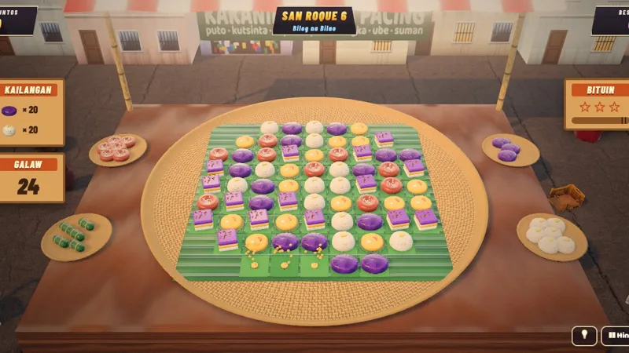

Kakanin Crush
Match-3, Pinoy style, in 3D

PuzzleTouch · Mouse · KeyboardFree, in the browser
Play Kakanin CrushAbout the game
Lola Pacing runs a kakanin (rice cake) stall, and her bilao, the big round woven tray every Filipino lola seems to own, is piled high. Your job is to help her sell out. Kakanin Crush is a match-three puzzle in the family of Candy Crush, except the pieces are puto, kutsinta, sapin-sapin, bibingka, ube halaya and suman, all in 3D.
The game travels with Lola through three towns of fifteen levels each. San Roque is a sari-sari store street at golden hour, the Palengke ng Malinta is a busy noon market, and the third stop, Simbahan, is a church plaza at dusk after Simbang Gabi, lit by parol (star lanterns). Lola watches from behind her stall the whole time: she claps for specials, cheers long chain reactions and slumps a little when you lose.
How to play
Swap two neighboring kakanin to line up three or more of the same kind. They clear, the pieces above drop down, and new ones fall in. A swap that makes no match slides back and does not cost a move. Each level gives you a set number of moves and an order to fill, such as a score, a number of a certain kakanin, or a job like cleaning the tray.
Bigger matches leave behind special pieces named after kitchen tools:
- Sandok (ladle): four in a line. Clears a whole row or column.
- Kaldero (cooking pot): an L or T shape. Bursts the three-by-three square around it.
- Bilao ng Lahat (tray of everything): five in a line. Clears every piece of the kind you swap it with.
Swap two specials into each other for an even bigger combo. Later levels add obstacles. Latik, the sticky coconut caramel, sits under some pieces until you match on top of it. In the market, some kakanin are still wrapped in dahon (banana leaf) and stay stuck until a match next to them unwraps them. At the church plaza, gata (coconut milk) and asukal (sugar) appear on the board; they never match, and you deliver them by bringing them down to the bottom of the tray.
Finish an order with moves to spare and Lola calls an Ubos-Benta (sold out!): every leftover move turns into a Sandok for bonus points. Stars from each level open the next town and earn boosters: a Pamaypay (fan) to shuffle the tray, a Sandok to place, Merienda (a snack) for five extra moves, and a Siyanse (spatula) to lift out one piece. Boosters never cost a move.
- Touch or mouse: drag a kakanin onto its neighbor, or tap one and then the other.
- Keyboard: the arrow keys move the cursor, Space picks a piece up, and an arrow key swaps it in that direction.
Tips
- Work near the bottom of the tray when you can. Clears there shake everything above loose and set off free chain reactions.
- Before you take an easy three, scan for a four or an L shape. One special is worth several plain matches.
- Swap a Sandok into a Kaldero for a cross three pieces wide, row and column. Two Bilao ng Lahat swapped together clear the whole tray.
- For gata and asukal, clear the columns underneath them rather than chasing points elsewhere.
- Leftover moves become Sandoks at the end, so finishing early is worth more than squeezing out one more match.
- Keep boosters for the last few moves of a hard level.
Kakanin, the rice cakes of the Philippines
Kakanin is the Filipino word for native snacks and sweets, most of them made from rice. The name comes from kain, to eat. Many are built on glutinous rice (malagkit) or rice flour, cooked with coconut milk and sugar, and they show up at merienda (afternoon snack), at birthdays, at wakes and at every fiesta.
Each piece in the game is a real favorite. Puto is a small, soft steamed rice cake, often white. Kutsinta is its chewy brown cousin, eaten with grated coconut. Sapin-sapin is stacked in bright layers of color. Suman is sticky rice wrapped tightly in banana or palm leaves. Bibingka is baked in a clay pot lined with banana leaves, with heat from below and above. Ube halaya is a thick purple yam jam that shares the same tables.
Bibingka also ties in with the third town. During Simbang Gabi, the nine days of Masses before Christmas, traditionally held at dawn, vendors set up outside churches and sell bibingka and puto bumbong to people coming out of the service.